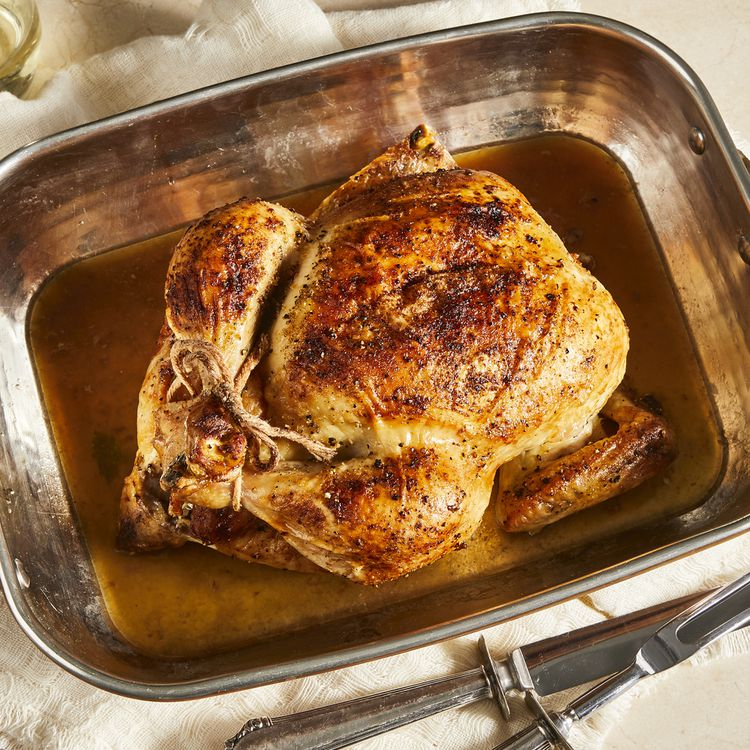

Juicy Roast Chicken

Description
This roasted chicken recipe is the way my grandmother used to make it. This method results in the juiciest chicken! We loved to nibble on the celery after it was cooked.
Ingredients
- Chicken: This recipe starts with a 3-pound whole chicken. If your bird is larger or smaller, you'll need to adjust the recipe
- Seasonings: This roasted chicken is simply seasoned with salt, black pepper, and onion powder.
- Butter: Butter (or margarine, if you prefer) locks in moisture and gives the seasonings something to adhere to.
- Celery: Stuff the chicken cavity with celery for subtle vegetal flavor. Plus, the celery will release even more moisture as the chicken cooks.
Steps
- Season the chicken inside and out
- Add the butter to the chicken and the pan.
- Stuff the cavity with celery
- Bake until the chicken is fully roasted
Back to main